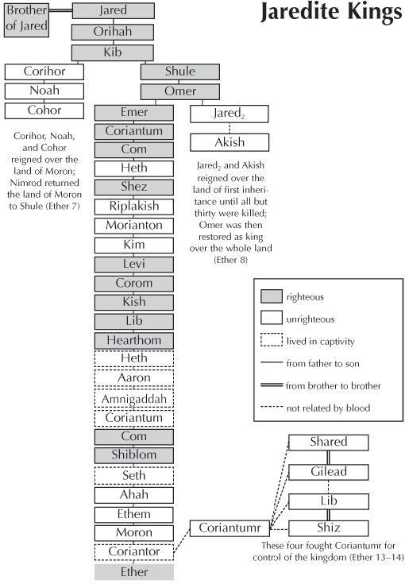

Ether is full of accounts of kings living in captivity—often for the remainder of their lives.
This was very characteristic at this time. A king was believed to connect the human and divine realms and was considered to hold the unique position of appeasing the idolatrous gods for the benefit of all the people. In this way, royal monarchs were viewed as being sacred or even quasi-divine. The enemies of a king could not put him to death without

fearing retribution in society or fearing that they would be the cause of punishment on all the people by idolatrous gods.
What kind of captivity was Omer in where he could beget “sons and daughters?” How long was he in captivity? How old must his sons have been to deliver him? “Captivity” did not mean being put behind bars or in a penitentiary. There were no jails or prisons in antiquity and there was no sentence of “life-in-prison.” Incarcerating people was very expensive. If someone needed to be restrained temporarily, he would be thrown and contained in a cistern for a short period of time.
This ancient society had class distinctions and was highly class structured, as was all of the ancient near-eastern world. With class distinction came privileges and legal benefits for those in the upper class—particularly for royalty. Enemies of a king could confine him and other royal members in a restricted area where they were required to stay—in a palace or a specific part of the land. Even though they were restricted in their movement, they lived their lives in comparative ease. They were not put into slavery, nor were they required to work for other people. Therefore, the many kings over several generations who were required to live “in captivity” in the Book of Ether were likely confined to living in restricted areas, but were permitted to live and act with relative freedom.
Below is a chart showing the chronology of the Jaredite kings, indicating those who ruled righteously, those who were a wicked influence over the people, and those who lived in captivity. The main column of this chart shows the founder of the Jaredite nation and follows his progeny down to Ether, who was not a king. His name is on this book in the Book of Mormon because it was Ether who told the history of the Jaredite people. This list also gives the names of others who created conflict with particular kings and asserted power as rulers.
In Ether 8, the problem of ancient, secret, and wicked oaths comes in with a vengeance (8:15, 16, 20). Here we have an early arising of the secret oaths and combinations, instigated by a daughter of king Jared. What did she propose? According to Moroni, where did the secret oaths come from? Who maintained and restored the oaths? (8:9–16). Why does Moroni not record the “manner of their oaths?” What does Moroni prophesy about nations that “uphold such secret combinations, to get power and gain?” What does Moroni suggest we should do when we see “these things come among you?” Who is behind the building up of this system? What are some solutions for us in our day? (8:20–26).
In describing the book of Ether, Book of Mormon scholar Grant Hardy observed, “Moroni maintains a more pervasive narrator presence” than his father, Mormon. Moroni interspersed comment on the Jaredite narrative at five points: Ether 1:1–6; 3:17–20; 4:1–6:1; 8:18–26; 12:6– 41. In the book of Ether alone, the phrase, “I, Moroni” appears eleven times. In contrast, the phrase “I, Mormon” only appears three times outside Mormon’s own writing about his own lifetime. Moroni used Mormon’s classic phrase “and thus we see” only once. This occurrence in Ether 8:20 is a good place to look at Moroni’s editorial philosophy.
There may be several explanations as to why Mormon’s and Moroni’s approaches were so different. Unlike Mormon, who had time to carefully craft his abridging and commentary, Moroni’s life was constantly under threat, making it so he had to work under incredibly difficult circumstances. He had to edit, abridge, and write under the assumption that his life could end suddenly. This accounts for why Moroni wrote multiple endings to his record. For example, in Moroni 1:1 he states: “Now I, Moroni, after having made an end of abridging the account of the people of Jared, I had supposed not to have written more, but I have not as yet perished.”
It may be that Moroni left the blocks of Jaredite record more or less intact and edited the original text less than his father Mormon did. When Moroni’s five comments are removed from Ether, the remaining text flows flawlessly. For example, when the text of Ether 12:5 and 13:2 is read back to back, they read like they belong together: “Ether did prophesy great and marvelous things unto the people, which they did not believe, because they saw them not … For behold, they rejected all the words of Ether; for he truly told them of all things, from the beginning of man.” Even though there is almost an entire chapter of commentary from Moroni separating these verses, they flow together perfectly.